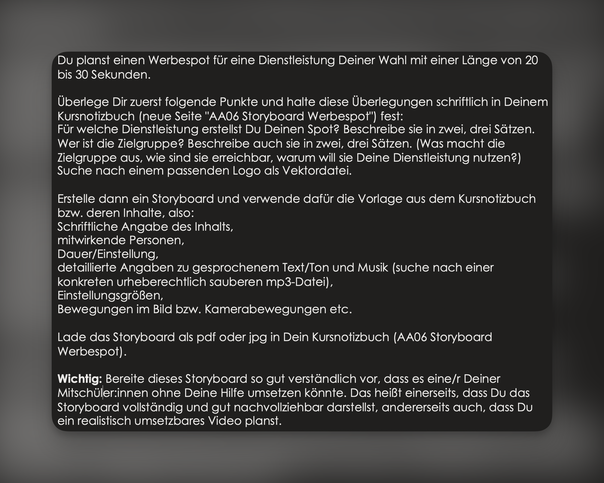
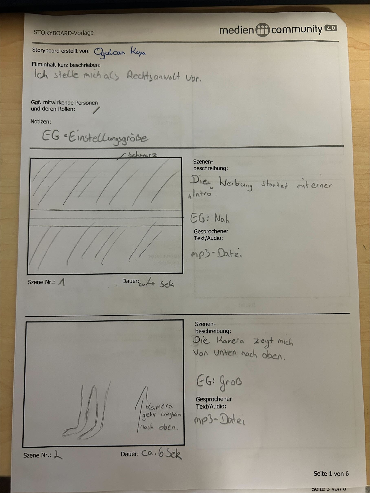
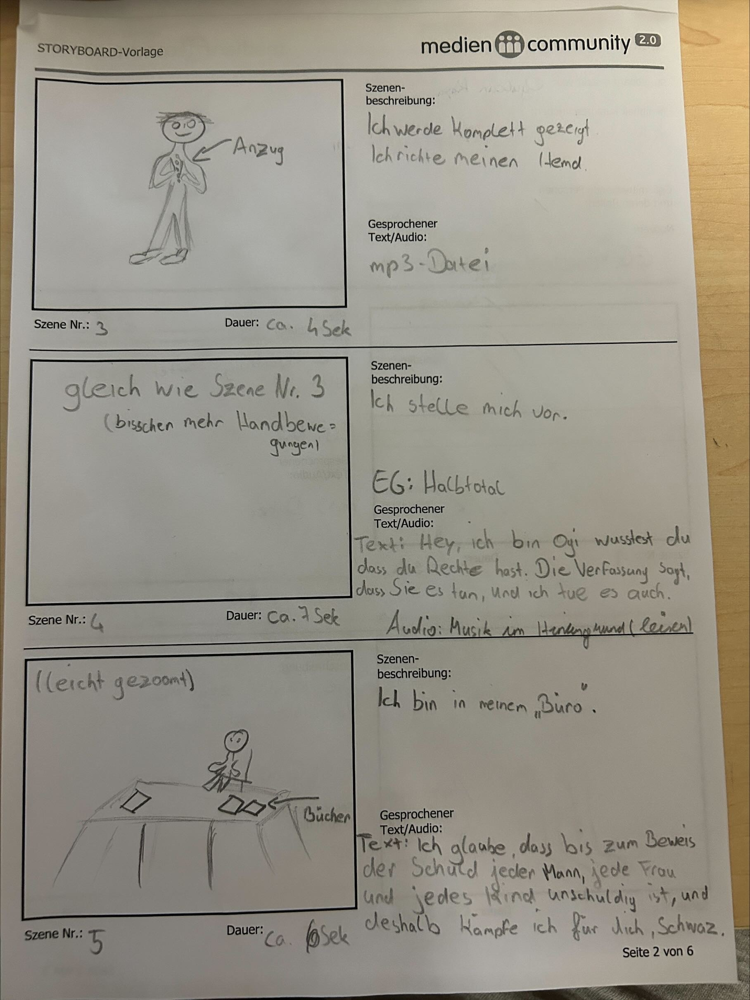
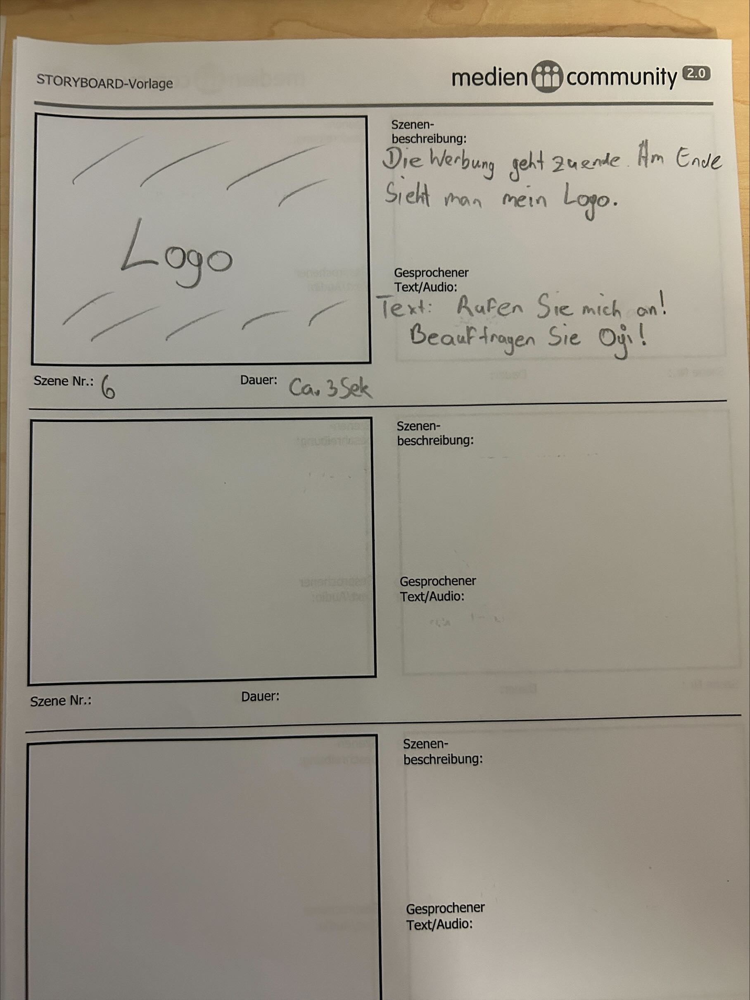

Planung eines 20- bis 30-sekündigen Werbespots für eine selbst gewählte Dienstleistung — mit Storyboard, Zielgruppenanalyse und vollständiger Szenenplanung.
Im MINF-Unterricht planten wir einen Werbespot von 20 bis 30 Sekunden Länge für eine Dienstleistung unserer Wahl. Ich entschied mich für einen fiktiven Rechtsanwalts-Spot, in dem ich mich selbst als Anwalt "Oji" vorstelle.
Zuerst wurde die Dienstleistung und Zielgruppe schriftlich beschrieben sowie ein passendes Logo gesucht. Anschließend erstellte ich ein vollständiges Storyboard auf Basis der Kursnotizbuch-Vorlage — mit Szenenbeschreibungen, Einstellungsgrößen, gesprochenem Text, Musik und Kamerabewegungen. Das fertige Storyboard wurde als PDF bzw. JPG im Kursnotizbuch (AA06 Storyboard Werbespot) abgegeben.

| Szene | Beschreibung | EG | Text / Audio | Dauer |
|---|---|---|---|---|
| 1 | Die Werbung startet mit einer „Intro"-Einblendung auf schwarzem Hintergrund. | Nah | mp3-Datei | ca. 4 Sek |
| 2 | Die Kamera zeigt mich von unten nach oben (Kamera geht langsam nach oben). | Groß | mp3-Datei | ca. 6 Sek |
| 3 | Ich werde komplett gezeigt — ich richte meinen Hemdkragen (Anzug). | Total | mp3-Datei | ca. 4 Sek |
| 4 | Ich stelle mich vor (gleiche Einstellung wie Szene 3, etwas mehr Handbewegungen). | Halbtotal | „Hey, ich bin Ogi — wusstest du, dass du Rechte hast? Die Verfassung sagt, dass Sie es tun, und ich tue es auch." · Musik im Hintergrund (leise) | ca. 7 Sek |
| 5 | Ich bin in meinem „Büro" — sitze am Schreibtisch mit Büchern (leicht gezoomt). | Halbnah | „Ich glaube, dass bis zum Beweis der Schuld jeder Mann, jede Frau und jedes Kind unschuldig ist — und deshalb kämpfe ich für dich, Schwaz." | ca. 6 Sek |
| 6 | Die Werbung geht zu Ende — am Ende sieht man mein Logo. | — | „Rufen Sie mich an! Beauftragen Sie Oji!" | ca. 3 Sek |
Das fertige Storyboard umfasst 6 Szenen mit einer Gesamtlänge von ca. 30 Sekunden. Der Spot stellt mich als fiktiven Rechtsanwalt „Oji" vor — mit Kamerafahrt von unten, Selbstvorstellung im Anzug, Bürosequenz und Abschluss-Logo.


